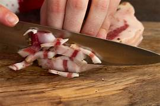
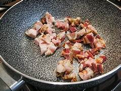

Dove sono nati gli spaghetti alla carbonara? Il Vicolo della Scrofa, per chi conosce Roma, è una delle stradine più caratteristiche e ricche di simboli. Proprio in una trattoria di questa strada, da cui il nome del vicolo, pare sia stata realizzata la prima carbonara, nel 1944. La storia più attendibile su questo primo piatto, infatti, racconta l'incontro tra gli ingredienti a disposizione dei soldati americani e la fantasia di un cuoco romano. Il risultato fu il prototipo degli spaghetti alla carbonara: uova, bacon (poi guanciale) e formaggio. Man a mano la ricetta è evoluta fino a quella che tutti conosciamo oggi e possiamo apprezzare a casa di amici romani veraci (e voraci!), nelle trattorie come nei ristoranti stellati della Capitale, in tutta Italia e all'estero, nelle innumerevoli versioni: con o senza pepe, con un tuorlo per persona o l'aggiunta di almeno un uovo intero, con guanciale o pancetta tesa.
Tutorial per la Carbonara dello Chef Max Mariola
se vuoi vedere altre sue ricette Clicca qui
Per preparare gli spaghetti alla carbonara cominciate mettendo sul fuoco una pentola con l’acqua salata per cuocere la pasta. Nel frattempo eliminate la cotenna dal guanciale e tagliatelo prima a fette e poi a striscioline spesse circa 1cm . La cotenna avanzata potrà essere riutilizzata per insaporire altre preparazioni,Versate i pezzetti di guanciale in una padella antiaderente e rosolate per circa 10 minuti a fiamma medio alta, fate attenzione a non bruciarlo altrimenti rilascerà un aroma troppo forte Nel frattempo tuffate gli spaghetti nell’acqua bollente e cuoceteli al dente Scolate la pasta al dente direttamente nel tegame con il fondo di cottura . Saltatela brevemente per insaporirla . Togliete dal fuoco e versate il composto di uova e Pecorino nel tegame. Mescolate velocemente per amalgamare Intanto versate i tuorli in una ciotola,Aggiungete il Pecorino e insaporite con il pepe nero . Amalgamate il tutto con una frusta a mano , sino ad ottenere una crema liscia. Per renderla ben cremosa, al bisogno, potete aggiungere poca acqua di cottura della pasta. Aggiungete il guanciale , mescolate un'ultima volta e servite subito gli spaghetti alla carbonara aggiungendo ancora del pecorino in superficie e un pizzico di pepe nero. Il guanciale non dovrà essere rosolato troppo, altrimenti potrebbe rilasciare un gusto amarognolo. Inoltre è bene aggiungere il guanciale solo all'ultimo per mantenere la sua croccantezza. Gli Ingredienti Principali
Preparazione


Consiglio
Creatori di questa pagina
Matteo Pelosi e Marco Tudisco
Contatti
mtudisco@cerebotani.it--mpelosi@cerebotani.it
telefono
349 184 2628